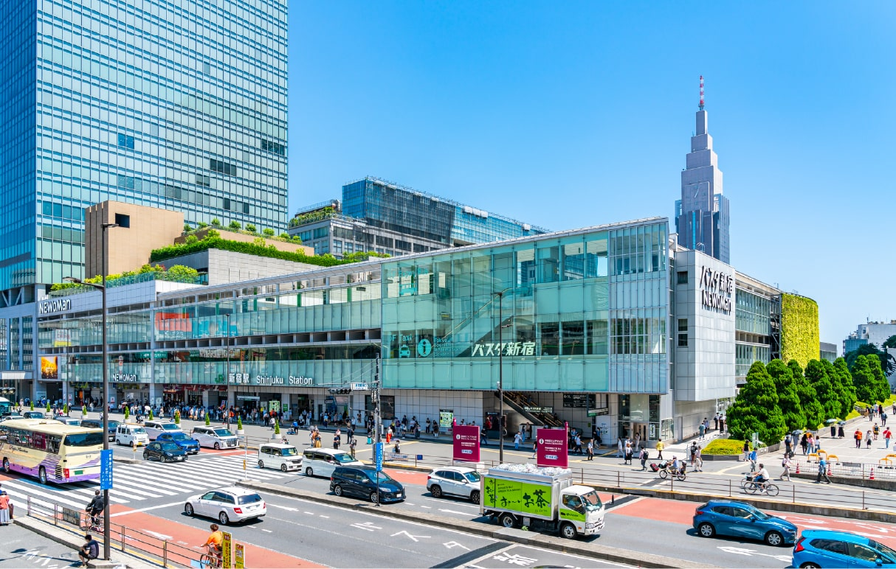
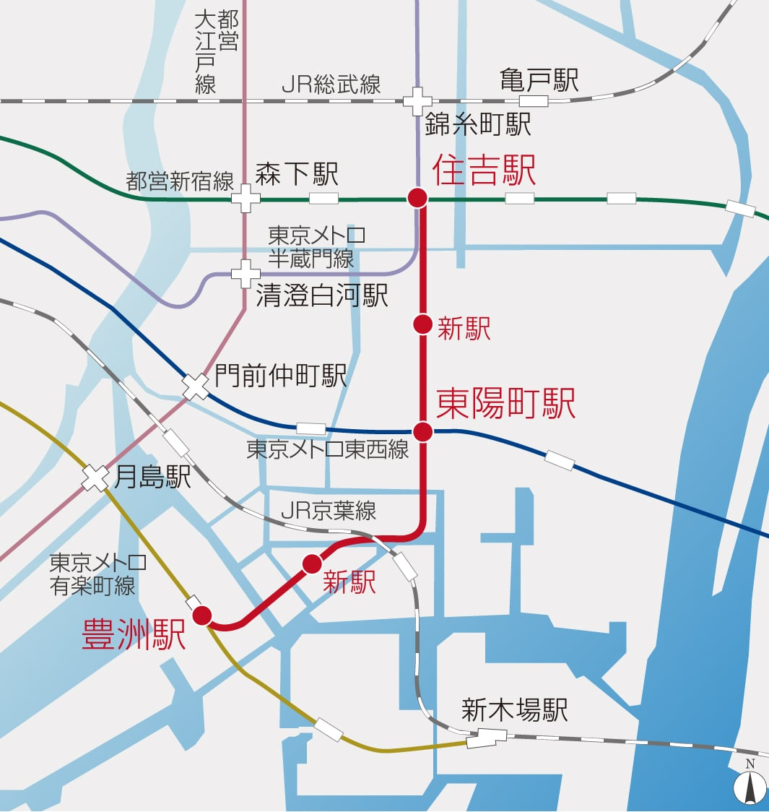
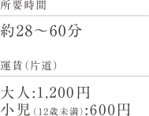

錦糸公園（約210ｍ／徒歩3分）
東京メトロ半蔵門線
都心近接＆「錦糸町」駅徒歩８分
錦糸公園の緑の潤いを感じる、
心地よいアプローチを抜けて。
都心と快適につながる東京メトロ半蔵門線「錦糸町」駅の４番出口へ徒歩８分。
快適なアプローチが、さらにその価値を高めてくれるポジションです。
現地周辺イラストマップ
-

① 錦糸公園（約550m／徒歩7分）
1駅を出てすぐの並木道
-

② 錦糸公園（約300m／徒歩4分）
2プロムナード
-
③ オリナス錦糸町（約380m／徒歩5分）
3オリナス錦糸町と錦糸公園の歩道
TRAIN ACCESS
東京メトロ半蔵門線で大手町へ直通13分※1。
都心を自在にする軽快なアクセス。
東京メトロ半蔵門線路線概念図
東京メトロ半蔵門線「錦糸町」駅より
東京メトロ半蔵門線をはじめ、
JR総武線とJR総武線快速の計３路線が利用可能。
大手町、東京、秋葉原、品川など、都心の主要駅がダイレクトにつながります。
路線図
JR「錦糸町」駅より
-
image photo
-
image photo
-
image photo
-

image photo
-

東京メトロ有楽町線延伸（豊洲?住吉間）概念図
-
東京メトロ有楽町線の延伸計画によって、
豊洲方面へのアクセス利便が向上。現在、東京メトロでは、豊洲駅から住吉駅までをつなぐ有楽町線の延伸を予定。これにより、住吉駅から東西線と有楽町線につながる南北のラインが形成されることとなり、錦糸町から豊洲方面へのアクセス利便が飛躍的に向上する見込みです。
東京メトロ有楽町線延伸（2030年代半ば開業予定）／出典：東京メトロHP（2024年1月現在）
CAR ACCESS
都心へ、湾岸へ、空港へ。
日常を広げる快適なカーアクセス。
首都高速道路を利用しやすいポジション。
首都高速7号線「錦糸町」
入口まで約1,250m
「錦糸町」駅前には、羽田空港行きのスカイツリーシャトル®が発着。
「錦糸町」駅南口 スカイツリーシャトル®乗り場 （約850m／徒歩11分）
-

-
image photo
※1.東京メトロ半蔵門線「錦糸町」駅より東京メトロ半蔵門線利用、直通13分（12分）。
※掲載の電車所要時間は待ち時間・乗り換え時間を含んだ通勤時（カッコ内は平常時）の目安であり、時間帯により多少異なります。
※掲載の路線図、東京メトロ有楽町線延伸（豊洲?住吉間）概念図は、一部路線・駅等を抜粋して表記しています。
※距離表示については地図上の概測距離を、徒歩分数表示については80ｍを1分として算出し、端数を切り上げたものです。
※掲載の環境写真は2023年11月に撮影。
※掲載の距離表示については地図上の概測距離を、高速道路は「ドラぷら（NEXCO東日本）」ホームページにて検索（2023年10月現在）したものです。但し、天候不順、周辺の交通状況（朝・夕の混雑、交通事故等）等により大幅な遅延が生じる場合があります。
※掲載の現地周辺イラストマップは、一部道路・施設等を抜粋して表記しています。
※掲載の東京メトロ半蔵門線路線概念図は立地状況を説明するための概念図であり、建物位置・高さ・距離・縮尺等は実際とは異なります。
※掲載のスカイツリーシャトル?の所要時間は目安であり、時間帯により多少異なります。※出典：「東武バスHP」（2023年9月現在）